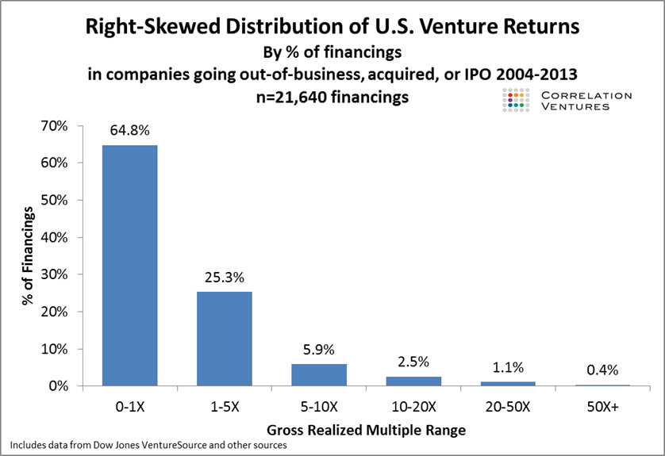
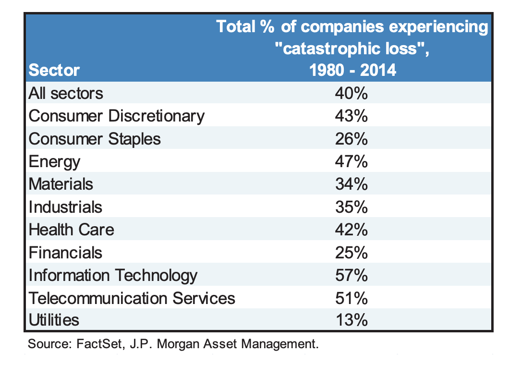
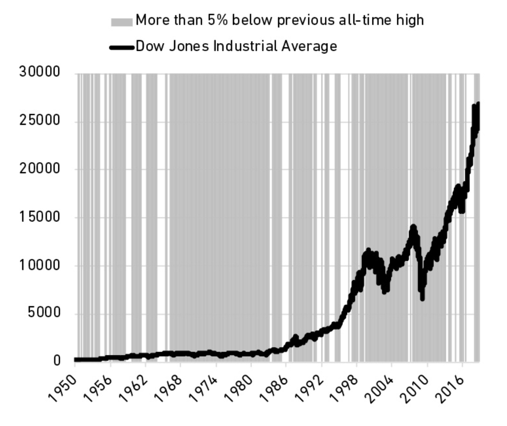

一、只需做对很少的事情 + 别掉下牌桌
在投资中，做对少数几件事就足以来丰厚的回报。所以失败了不用灰心，重要的是设置好安全边界，让自己一直能待在牌桌上。换句话说，别做“成则一步登天，败则万劫不复”式的赌博。
来自风险投资领域的统计数据 1：
- 65% 的投资是亏损的。
- 2.5% 的投资能带来 10~20 倍的回报。
- 1% 的投资带来了 20~50 倍的回报。
- 而最顶尖的那 0.4% 带来了 50 倍以上的回报。

这种“大多数失败、极少数成功”的极度不均衡分布情况，并不只出现于风险投资。公开股票市场里也是如此：绝大多数的公司都会遭遇灾难性下跌，且再难爬起来 2。

二、买了潜力股、但拿不住
1968 年，我买了一些标普 500 的指数基金，到 2018 年卖掉的时候，它翻了 119 倍。
2002 年，我买了一些 Netflix 的股票，到 2018 年卖掉的时候，投资回报率是 35,000%（不用数了，350 倍）。
开玩笑的，1968 年我还没有出生，2002 年我也没有炒股、也不知道 Netflix 是啥。所以上面都是“如果”。
从这些“如果”看上去，投资似乎并不难，买十万块的指数基金，等着他变成一千一百九十万或者三千五百万就好了。
但为什么绝大多数人做不到？因为“拿住”的真实代价，远超后见之明的想象。
这个代价，是这张寻常的曲线图中的时间分布：在绝大多数日子里，股价都比之前的高点跌了至少 5%。这意味着，投资者大部分时间里都在承受“失去利润”的煎熬，而不是收获增长的喜悦。

试想一下：
一年前我按 ¥30 的单价买了些股票，上月初它冲到了 ¥200，算下来我的收获颇丰。可自那以后它一直徘徊在 ¥150 左右，终于在今天，它开盘反弹到了 ¥190、但收盘时回落到 ¥180。卖不卖？
“卖不卖？”，这是投资者们在绝大多数时间里都在面对的灵魂拷问。
对于买了 Netflix 股票的投资者来说，“绝大多数时间”是指 94% 的日子。也就是说，每个月都有那么 29 天，投资者看着比高点跌了至少 5% 的股价，懊悔或焦虑地问自己“落袋为安还是搏下去？”
因此，“拿不住”不是因为意志不够坚定，而是一种更符合人性的反应。
也因此，作者摩根 · 豪泽尔抛出一个有意思的观点：买我们对之有“感情”的资产，比如这样公司的股票 —— 我认同它的理念，我信赖它的产品，我欣赏它的掌舵人。这些感情会支撑我们熬过低谷期。
- 2008 年金融危机，Netflix 股价跌 55.9%
- 2011 年 Netflix 主动分拆传统 DVD 邮寄业务，股价暴跌了 80%
- 2020 年疫情爆发，Netflix 股价跌了 22.9%
- 2021 年底到 2022 年中，Netflix 股价暴跌 75.9%，从 $691 跌到 $166 。直到 2024 年下半年才重新爬回高点
这些代价，旁观者不容易看得见。
而另一方面，投资者也会主动避免付出看得见的代价，这是“拿不住”的另一个原因：我们常把市场波动视为“罚金（Fine）”，而非“门票（Fee）”。
费用与罚金
许多人为了避开市场波动带来的损失，会频繁交易，搏“低点买入、高点卖出”的机会。如果没搏到，便会觉得这是做错了选择而受到的惩罚、缴纳的“罚金”。
这背后是心理学里一个叫做“公正世界假说”的认知谬误在作祟：认为善有善报、恶有恶报。如有恶报，定是做了恶犯了错。
作者给出了一个建议：把市场波动和不确定性，看作必须支付的“费用”。就像进游乐场需要买门票，它们是获得回报的入场券。这种态度能帮助我们清晰地做分析评估，坦然地接纳代价。
对我而言，买房育儿亦如此。
买房，市场的不确定性，是我获得更舒适的居住体验和更有安全感的生活心态而支付的费用。
育儿，生活的巨大变化、养育的压力，是我获得更美好生活而预付的费用。
{kind=link}